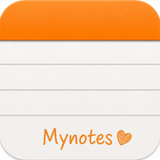

Mini Notes
Choose your language / 选择语言
English (US)
Mini Notes
简体中文
极简笔记
日本語
ミニメモ
English (UK)
Mini Notes
Deutsch
Mini Notizen
Français
Mini Notes
Español (México)
Mini Notas
Português (BR)
Mini Notas
हिन्दी
मिनी नोट्स
繁體中文
極簡筆記
한국어
미니 노트
Italiano
Mini Note
Español (España)
Mini Notas
Русский
Мини-заметки
English (AU)
Mini Notes
العربية
ملاحظات مصغّرة
Français (CA)
Mini Notes
English (CA)
Mini Notes
Nederlands
Mini Notities
Türkçe
Mini Notlar
ไทย
มินิโน้ต
Tiếng Việt
Ghi Chú Mini
Bahasa Indonesia
Catatan Mini
Svenska
Mini Notes
Polski
Mini Notatki
தமிழ்
மினி நோட்ஸ்
తెలుగు
మినీ నోట్స్
मराठी
मिनी नोट्स
اردو
منی نوٹس
বাংলা
মিনি নোটস
Dansk
Mini Noter
Norsk
Mininotater
Suomi
Mini Notes
עברית
מיני הערות
Ελληνικά
Μίνι σημειώσεις
Bahasa Melayu
Nota Mini
ગુજરાતી
મિની નોટ્સ
ಕನ್ನಡ
ಮಿನಿ ನೋಟ್ಸ್
മലയാളം
മിനി നോട്ട്സ്
ਪੰਜਾਬੀ
ਮਿਨੀ ਨੋਟਸ
Čeština
Mini poznámky
Magyar
Mini Jegyzetek
Українська
Мінінотатки
Română
Mini Notițe
Português (PT)
Mini Notas
Slovenčina
Mini poznámky
Català
Mini Notes
Hrvatski
Mini bilješke
Slovenščina
Mini zapiski
ଓଡ଼ିଆ
ମିନି ନୋଟ୍ସ